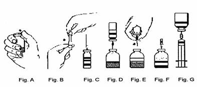
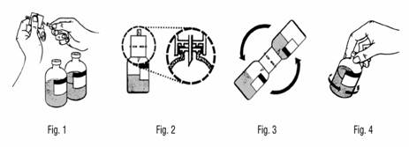

RÉSUMÉ DES CARACTÉRISTIQUES DU PRODUIT
ANSM - Mis à jour le : 10/12/2007
ENDOBULINE 50 mg/ml, poudre et solvant pour solution injectable
2. COMPOSITION QUALITATIVE ET QUANTITATIVE
1 ml de solution reconstituée contient :
Immunoglobuline humaine normale (IV)................................................................................................. 50 mg*
* correspondant à une quantité totale de protéines, dont au moins 95% sont des IgG.
Après reconstitution
· Un flacon de 10 ml contient 0,5 g d’immunoglobuline humaine normale
· Un flacon de 20 ml contient 1 g d’immunoglobuline humaine normale
· Un flacon de 50 ml contient 2,5 g d’immunoglobuline humaine normale
· Un flacon de 100 ml contient 5 g d’immunoglobuline humaine normale
· Un flacon de 200 ml contient 10 g d’immunoglobuline humaine normale
|
Répartition en sous-classes d'IgG : |
|
|
IgG1 |
50 - 80 % |
|
IgG2 |
20 - 50 % |
|
IgG3 |
0 % |
|
IgG4 |
1 - 3 % |
|
IgA |
max. 1mg/g de protéines |
|
Trypsine d'origine animale |
traces |
Pour les excipients, voir rubrique 6.1.
Poudre et solvant pour solution injectable.
4.1 Indications thérapeutiques
Traitement de substitution :
· déficits immunitaires primitifs avec hypogammaglobulinémie ou atteinte fonctionnelle de l'immunité humorale,
· déficits immunitaires secondaires de l'immunité humorale, en particulier la leucémie lymphoïde chronique ou le myélome avec hypogammaglobulinémie et associés à des infections à répétition,
· infections bactériennes récidivantes chez l'enfant infecté par le VIH.
· allogreffes de cellules souches hématopoïétiques.
Traitement immunomodulateur :
· purpura thrombopénique idiopathique (PTI) chez l'adulte et l'enfant en cas de risque hémorragique important ou avant un acte médical ou chirurgical pour corriger le taux de plaquettes,
· syndrome de Guillain et Barré de l'adulte,
· maladie de Kawasaki.
4.2 Posologie et mode d'administration
Posologie
La posologie et l'intervalle entre les administrations dépendent de l'usage auquel est destiné le traitement (substitution) et de la demi-vie de l'Immunoglobuline humaine normale par voie intraveineuse (IgIV) in vivo chez les patients atteints de déficit immunitaire.
Les posologies suivantes sont données à titre indicatif.
Traitement de substitution en cas de déficit immunitaire primitif :
Le traitement doit avoir pour but d'assurer un taux d'IgG résiduel (c'est-à-dire avant l'administration suivante d'mmunoglobuline G humaine normale) d'au moins 4 à 6 g/l. Après le début d'un traitement par l'immunoglobuline humaine normale, l'équilibre s'effectue en 3 à 6 mois. On peut recommander une dose de charge de 0,4 à 0,8 g/kg selon les circonstances (infection) puis une perfusion de 0,2 g/kg toutes les 3 semaines. Les doses d'immunoglobuline humaine normale nécessaires pour atteindre un taux résiduel de 4 à 6 g/l sont de l'ordre de 0,3 g/kg/mois, avec des extrêmes de 0,2 à 0,8 g/kg/mois. L'intervalle des perfusions varie de 15 jours à 1 mois. La survenue d'infections peut nécessiter l'emploi temporaire de perfusions plus fréquentes.
Dans le traitement substitutif des déficits immunitaires primitifs, un dosage des concentrations sériques d'IgG avant chaque perfusion s'avère nécessaire pour contrôler l'activité du traitement et éventuellement ajuster la dose ou l'intervalle d'administration.
Traitement de substitution en cas de déficit immunitaire secondaire :
On peut recommander une dose de 0,2 à 0,4 g/kg toutes les 3 à 4 semaines.
Purpura thrombopénique idiopathique (PTI) :
Pour le traitement d'attaque, 0,8 à 1g/kg/j au jour 1, éventuellement répété au jour 3, ou 0,4g/kg/j pendant 2 à 5 jours. Ce traitement peut être renouvelé en cas de réapparition d'une thrombopénie sévère.
Syndrome de Guillain Barré de l'adulte :
0,4g/kg de poids corporel/jour pendant 5 jours.
Maladie de Kawasaki :
1,6 à 2,0 g/kg administrés en plusieurs doses réparties sur 2 à 5 jours ou 2,0 g/kg en dose unique, associées à l'acide acétylsalicylique.
Allogreffe de cellules souches hématopoïétiques :
Les IgIV sont généralement utilisées avant et après l'allogreffe.
Les IgIV ont un effet préventif vis-à-vis de la survenue de complications infectieuses et réduisent la fréquence et la sévérité de la maladie du greffon contre l'hôte chez les receveurs d'allogreffe de cellules souches hématopoïétiques.
La posologie est déterminée sur la base individuelle et commence habituellement par une dose de 0,5 g/kg/semaine de J‑7 à J+90.
En cas de défaut persistant de la production d'anticorps, on recommande actuellement la posologie de 0,5 g/kg/mois jusqu'à J+360.
Posologie et Mode d'administration
|
Indication |
Posologie |
Rythme des injections |
Traitement associé |
|
Traitement substitutif dans les déficits immunitaires primitifs |
- dose de charge : 0,4 à 0,8 g/kg |
|
|
|
|
- dose d'entretien : 0,2 à 0,8 g/kg |
toutes les 2 à 4 semaines pour obtenir un taux résiduel d'IgG d'au moins 4 à 6 g/l |
|
|
Traitement substitutif dans les déficits immunitaires secondaires |
0,2 à 0,4 g/kg |
toutes les 3 à 4 semaines pour obtenir un taux résiduel d'IgG d'au moins 4 à 6 g/l |
|
|
Allogreffes de cellules souches hématopoïétiques. |
|
|
|
|
Prévention des complications infectieuses et de la maladie du greffon contre l'hôte |
0,5 g/kg |
chaque semaine de J-7 à J + 90 |
|
|
En cas de défaut persistant de la production d'anticorps |
0,5 g/kg |
chaque mois jusqu'à J + 260 |
|
|
Traitement immunodulateur |
|
|
|
|
Purpura thrombopénique idiopathique |
0,8 à 1g/kg |
A J1, éventuellement |
|
|
ou |
répété à J3 |
|
|
|
0,4 g/kg/j |
pendant 2 à 5 jours |
|
|
|
Syndrome de Guillain et Barré de l'adulte |
0,4 g/kg/j |
pendant 5 jours |
|
|
Maladie de Kawasaki |
1,6 à 2,0 g/kg |
en plusieurs doses |
acide acétylsalicylique |
|
ou |
réparties sur 2 à 5 j |
|
|
|
2g/kg |
en une dose unique |
|
Mode d'administration
Cette préparation d'immunoglobuline se présente sous la forme d'une poudre à reconstituer extemporanément avec de l’eau pour préparations injectables, selon les modalités décrites dans le paragraphe "Mode d'emploi, instructions concernant la manipulation".
L'immunoglobuline humaine normale doit être exclusivement administrée par voie intraveineuse en une seule fois et immédiatement après reconstitution.
Le débit doit être attentivement contrôlé :
· chez les patients recevant pour la première fois des IgIV, le débit ne devra pas dépasser 0,5 ml/kg/h ;
· chez les patients ayant déjà reçu des IgIV, le débit sera adapté en fonction de la tolérance clinique, sans dépasser 1 ml/kg/h pendant les 30 premières minutes en augmentant progressivement jusqu'à un maximum de 4 ml/kg/h.
Ne pas utiliser de solution présentant un aspect non homogène ou contenant un dépôt.
4.3 Contre-indications
Ce médicament est contre-indiqué dans les situations suivantes :
· chez les patients présentant un déficit en IgA et avec des anticorps circulants anti-IgA ;
· hypersensibilité connue à l'un des constituants de la préparation.
4.4 Mises en garde spéciales et précautions particulières d'emploi
Certains effets indésirables peuvent être associés au débit d’administration. Le débit recommandé (voir paragraphe Mode d’administration) doit être scrupuleusement observé et les patients doivent rester sous surveillance pendant toute la durée de la perfusion afin de détecter d’éventuels signes d’intolérance.
Le risque de réactions anaphylactiques, voire d’état de choc, est plus fréquent :
· en cas de perfusion intraveineuse rapide (voir paragraphe 4.2. « Mode d’administration »),
· chez des patients hypo- ou agammaglobulinémiques, avec ou sans déficit en IgA,
· plus particulièrement lors de la première perfusion d'IgIV, ou lorsque le dernier traitement par les IgIV remonte à plus de 8 semaines.
Les vraies réponses allergiques à ce médicament sont rares. Une intolérance aux immunoglobulines peut se développer dans les très rares cas de déficit en IgA où le patient possède des anticorps anti-IgA.
Très rarement, les immunoglobulines humaines normales peuvent entraîner une chute brutale de la pression artérielle associée à une réaction anaphylactique même chez des patients qui ont présenté une bonne tolérance à une administration précédente d'immunoglobulines humaines normales.
Les complications potentielles peuvent souvent être évitées. Il est souhaitable :
· de surveiller attentivement le débit des perfusions ;
· de s'assurer initialement de la tolérance de l'administration des immunoglobulines humaines normales par une perfusion lente (0,5 ml/kg/h) ; chez les patients ayant déjà reçu des IgIV, le débit sera adapté en fonction de la tolérance clinique, sans dépasser 1 ml/kg/h pendant les 30 premières minutes en augmentant progressivement jusqu’à un maximum de 4 ml/kg/h ;
· de tenir compte de la teneur en glucose (1 g/g d’IgG) en cas de diabète latent où une glycosurie passagère peut survenir, de diabète ou de régime hypoglucidique ;
· de garder les patients sous surveillance pendant toute la durée de la perfusion, afin de détecter d'éventuels signes d'intolérance.
Le risque d’accidents thrombotiques artériels et veineux est plus fréquent en cas de perfusion intraveineuse rapide (voir paragraphe 4.2 « Mode d’administration »), plus particulièrement chez le sujet à risque vasculaire.
Des cas d’insuffisance rénale aiguë ont été rapportés chez des patients recevant des immunoglobulines humaines normales. Dans la plupart des cas, des facteurs de risque ont été identifiés, tels une insuffisance rénale pré-existante, un diabète, une hypovolémie ou une obésité, la prise concomitante de médicaments néphrotoxiques ou un âge supérieur à 65 ans.
Chez ces patients, l’administration d’IgIV impose :
· une hydratation correcte avant l’administration d’immunoglobulines humaines normales,
· de surveiller la diurèse,
· de doser la créatininémie,
· d’éviter d’associer des diurétiques de l’anse.
Bien que ces cas d’insuffisance rénale aient été associés à l’utilisation de nombreuses spécialités d’immunoglobulines humaines normales, celles contenant du saccharose comme stabilisant représentent la plus large part.
Aussi, chez les patients à risque, l’utilisation de préparations d’immunoglobulines humaines normales ne contenant pas de saccharose doit être envisagée. ENDOBULINE 50 mg/ml ne contient pas de saccharose.
Ce médicament contient 24 mg de sodium par gramme d’immunoglobuline : en tenir compte chez les personnes suivant un régime pauvre en sel.
En cas de réactions de type allergique ou anaphylactique, il convient d’interrompre immédiatement la perfusion. En cas de choc, le traitement symptomatique relatif à l’état de choc devra être instauré.
Le patient doit être maintenu en observation pendant au moins 20 minutes après la fin de la perfusion. En cas de première perfusion d’immunoglobulines humaines normales, le patient doit être maintenu en observation pendant au moins 1 heure après la fin de la perfusion.
Les mesures habituelles de prévention du risque de transmission d’agents infectieux par les médicaments préparés à partir de sang ou de plasma humain comprennent la sélection clinique des donneurs, la recherche des marqueurs spécifiques d’infection sur chaque don et sur les mélanges de plasma ainsi que la mise en œuvre dans le procédé de fabrication d’étapes efficaces pour l’inactivation/élimination virale. Cependant lorsque les médicaments préparés à partir de sang ou de plasma humain sont administrés, le risque de transmission d’agents infectieux ne peut pas être totalement exclu. Ceci s’applique également aux virus inconnus ou émergents ou d’autres types d’agents infectieux.
Les mesures prises sont considérées comme efficaces vis à vis des virus enveloppés tels que le VIH, le VHB et le VHC, et vis à vis des virus non développés VHA et parvovirus B19.
L’expérience clinique ne rapporte pas de transmission du virus de l’hépatite A ni du parvovirus B19 par les immonoglobulines, les anticorps présents contribuant probablement à la sécurité du produit.
4.5 Interactions avec d'autres médicaments et autres formes d'interactions
4.5.1 Vaccins constitués de virus vivants atténués
L'administration d'immunoglobuline humaine normale peut entraver l'efficacité des vaccins constitués de virus vivants atténués tels que les vaccins contre la rougeole, la rubéole, les oreillons et la varicelle. Après perfusion de ce médicament, attendre au minimum 6 semaines (de préférence 3 mois) avant d'administrer ce type de vaccins.
Si le patient a reçu des vaccins constitués de virus vivants atténués (rougeole, rubéole, oreillons, varicelle) au cours des 2 semaines précédant la perfusion, un contrôle des anticorps protecteurs post-vaccinaux peut être nécessaire en vue d'un éventuel rappel.
4.5.2 Interférence avec des tests sérologiques
Après administration d'immunoglobuline humaine normale, l'augmentation transitoire de la concentration de divers anticorps transférés peut être responsable de sérologies positives temporaires.
Ce médicament contenant des anticorps anti-érythrocytaires, son administration peut être suivie de façon transitoire d'un test de Coombs positif.
4.6 Grossesse et allaitement
Grossesse
Aucune étude de reproduction chez l'animal n'a été conduite avec ENDOBULINE, et l'expérience chez la femme enceinte est limitée. Bien qu'aucune réaction indésirable sur le fœtus et le nouveau-né n'ait été observée, les immunoglobulines humaines normales ne doivent être administrées chez la femme enceinte qu'en cas de nécessité bien établie.
Allaitement
Les protéines contenues dans l’immunoglobuline humaine normale étant des constituants normaux du plasma humain, leur passage dans le lait maternel ne doit pas provoquer d'effets indésirables chez le nouveau-né.
4.7 Effets sur l'aptitude à conduire des véhicules et à utiliser des machines
Rien ne suggère que l’immunoglobuline humaine normale diminuent l'aptitude à conduire des véhicules et à utiliser des machines.
4.8 Effets indésirables
Les effets secondaires liés à l'administration d' immunoglobuline humaine normale sont plus fréquents chez les malades atteints de déficits immunitaires primitifs.
· Comme avec les autres IgIV, des réactions de type frissons-hyperthermie parfois accompagnées de céphalées, nausées, vomissements, manifestations allergiques, élevation ou chute de la pression artérielle, arthralgies, et lombalgies modérées peuvent survenir occasionnellement.
· Le risque de réaction anaphylactique est plus élevé en cas de perfusion intraveineuse rapide (voir paragraphe 4.2. AMode d'administration@) chez des patients agammaglobulinémiques avec déficit en IgA ou hypogammaglobulinémiques qui n'ont jamais reçu d'immunoglobulines ou dont le dernier traitement par IgIV remonte à plus de 8 semaines. Un débit rapide pourrait même être responsable d'accidents thrombotiques artériels et veineux plus particulièrement chez le sujet à risque vasculaire.
· De rares cas d'hypotension et de chocs anaphylactiques ont été rapportés même chez des patients n'ayant pas présenté de réactions d'hypersensibilité lors d'injections antérieures.
· De rares cas de poussées hypertensives isolées ont été rapportés chez les patients recevant des IgIV.
· Comme avec les autres IgIV, de rares cas de réactions cutanées surtout eczématiformes, régressives, de rares cas d'anémie hémolytique et/ou hémolyse régressive et des cas d'élévation de la créatininémie et/ou d'insuffisance rénale aiguë et de très rares cas d'augmentation transitoire des transaminases ont été rapportés.
· Des cas de réaction méningée aseptique, particulièrement chez les patients présentant un purpura thrombopénique idiopathique ont été rapportés avec l'immunoglobuline humaine normale. Cette atteinte méningée est réversible en quelques jours après l'arrêt du traitement.
· De rares cas de thrombose ont été rapportés avec les Ig IV en majorité chez les sujets âgés ainsi que chez les patients présentant des risques d'ischémie cérébrale ou cardiaque, une surcharge pondérale ou atteints d'hypovolémie sévère.
4.9 Surdosage
Bien qu’aucun effet indésirable spécifique n'ait été rapporté avec ENDOBULINE, la survenue de certains effets secondaires (voir paragraphe 4.8. "Effets indésirables") dose-dépendants pourrait être favorisée : méningite aseptique, insuffisance rénale, hyperviscosité sanguine.
5. PROPRIÉTÉS PHARMACOLOGIQUES
5.1 Propriétés pharmacodynamiques
Immunoglobulines humaines polyvalentes
Code ATC : J06BA02
ENDOBULINE contient principalement des immunoglobulines G (IgG), entières. Ce produit est préparé à partir de pools de plasma provenant d'un maximum d'environ 40 000 donneurs. Des administrations appropriées de ce médicament sont susceptibles de ramener à une valeur normale un taux anormalement bas d'IgG.
Cette préparation présente un large spectre d'anticorps dont le pouvoir opsonisant et neutralisant vis à vis de divers agents infectieux et de toxines ont été documentés :
· le taux d'IgG n'est pas inférieur à 95 % et est en moyenne de 99,95 % ;
· la répartition moyenne des sous-classes d'Ig G est la suivante :
IgG1 = 50 à 80 % ; IgG2 = 20 à 50 % ; IgG3 = non détectable ; Ig G4 = 1 à 3 %
5.2 Propriétés pharmacocinétiques
Les immunoglobulines humaines normales ont une biodisponibilité complète et immédiate dès l'administration par voie intraveineuse. Les immunoglobulines humaines normales sont réparties entre le plasma et le liquide extravasculaire et un équilibre est atteint entre les compartiments intra et extra-vasculaires en 3 à 5 jours environ.
La demi-vie d'ENDOBULINE a été calculée chez des patients présentant un déficit immunitaire primitif. Elle est en moyenne de 37,7 jours. La demi-vie des immunoglobulines humaines normales est variable en fonction du statut immun du receveur.
Les immunoglobulines monomériques solubles et les complexes immuns sont dégradés par le système réticulo-endothélial.
5.3 Données de sécurité précliniques
Les données précliniques ne laissent supposer aucune potentialité mutagène ou oncogène d'ENDOBULINE. Une étude effectuée chez le lapin a montré une bonne tolérance locale.
6.1 Liste des excipients
poudre : glucose, chlorure de sodium.
solvant : eau pour préparations injectables.
6.2 Incompatibilités
ENDOBULINE ne doit pas être mélangé avec d’autres produits/médicaments à l’exception de ceux mentionnés dans la rubrique 6.6.
6.3 Durée de conservation
2 ans.
Après reconstitution, une utilisation immédiate est recommandée. Toutefois, la stabilité a été démontrée pendant 24 heures à une température ne dépassant pas + de 25° C.
6.4 Précautions particulières de conservation
A conserver au réfrigérateur (entre + 2 °C et + 8 °C) et à l'abri de la lumière.
Ne pas congeler.
6.5 Nature et contenu de l'emballage extérieur
· 0,5 g de poudre en flacon (verre) + 10 ml de solvant (verre) munis de bouchons (butyle) avec une aiguille de transfert, une aiguille filtre et une aiguille d’aération – Boîte de 1
· 1 g de poudre en flacon (verre) + 20 ml de solvant en flacon (verre) munis de bouchons (butyle) avec une aiguille de transfert, une aiguille filtre et une aiguille d’aération – Boîte de 1
· 2,5 g de poudre en flacon (verre) + 50 ml de solvant en flacon (verre) munis de bouchons (butyle) avec un dispositif de transfert, un nécessaire de perfusion et un suspensoir en plastique – Boîte de 1
· 5 g de poudre en flacon (verre) + 100 ml de solvant en flacon (verre) munis de bouchons (butyle) avec un dispositif de transfert, un nécessaire de perfusion et un suspensoir en plastique – Boîte de 1
· 10 g de poudre en flacon (verre) + 200 ml de solvant en flacon (verre) munis de bouchons (butyle) avec un dispositif de transfert, un nécessaire de perfusion et un suspensoir en plastique – Boîte de 1
6.6 Instructions pour l'utilisation, la manipulation et l'élimination
Reconstitution de la solution : utiliser une technique aseptique
Ne jamais utiliser les flacons dès la sortie du réfrigérateur. Laisser les à température ambiante avant la reconstitution de la solution.
La dissolution complète doit être obtenue en moins de 10 minutes. Une agitation douce à une température de 37°C maximum permet de réduire le temps nécessaire à la dissolution.
Présentations de 0,5 g et 1 g :
1. Retirer la capsule de protection des flacons de solvant et de poudre (fig. A) et désinfecter les bouchons de chaque flacon.
2. Retirer le capuchon protecteur d’une des extrémités du dispositif de transfert fourni et introduire l’extrémité libre dans le bouchon du flacon de solvant (fig. B et fig. C).
3. Retirer le capuchon protecteur de l’autre extrémité du dispositif de transfert. Ne pas toucher l’extrémité libre.
4. Retourner l’ensemble flacon de solvant/dispositif de transfert en le plaçant au-dessus du flacon de poudre et introduire verticalement l’extrémité libre du dispositif de transfert au centre du bouchon du flacon de poudre (fig. D). Par une légère rotation, ajuster le système de transfert sur le flacon de poudre. Le solvant est aspiré dans le flacon de poudre par le vide.
5. Séparer les deux flacons en retirant l’ensemble flacon de solvant/dispositif de transfert du flacon de poudre (fig. E). Agiter modérément le flacon de poudre avec un mouvement de rotation doux pour accélérer la dissolution. Ne pas secouer le flacon.
6. Après reconstitution de la poudre lyophilisée, introduire l’aiguille d’aération fournie (fig. F) pour éliminer la mousse qui se serait formée. Retirer l’aiguille d’aération.
|

|
Présentations de 2,5 g, 5 g et 10 g :
1. Retirer la capsule de protection des flacons de solvant et de poudre et désinfecter les bouchons de chaque flacon.
2. Retirer le capuchon protecteur d’une des extrémités du dispositif de transfert fourni (fig. 1) et introduire verticalement l’extrémité libre au centre du bouchon du flacon de solvant. Appuyer fermement afin que le dispositif de transfert s’emboîte parfaitement dans le flacon de solvant. (fig. 2).
Attention : si l’insertion ne se fait pas au centre du bouchon, celui-ci est susceptible de se déloger.
3. Retirer le capuchon protecteur de l’autre extrémité du dispositif de transfert. Ne pas toucher l’extrémité libre.
4. Maintenir le flacon de poudre fermement et à un angle d’environ 45 degrés. Retourner l’ensemble flacon de solvant/dispositif de transfert dans l’axe du flacon de poudre et introduire fermement le dispositif de transfert dans le flacon de poudre au centre du bouchon (fig. 3). Le solvant est aspiré dans le flacon de poudre par le vide.
Note : retourner l’ensemble flacon de solvant/dispositif de transfert et l’introduire dans le flacon de poudre rapidement afin d’éviter la perte de solvant.
Attention : si l’insertion ne se fait pas au centre du bouchon, celui-ci est susceptible de se déloger et une perte de vide peut se produire.
5. Séparer les deux flacons en retirant l’ensemble flacon de solvant/dispositif de transfert du flacon de poudre. Agiter modérément le flacon de poudre avec un mouvement de rotation doux pour accélérer la dissolution (fig. 4). Ne pas secouer le flacon.
|
 |
Administration
Le produit reconstitué doit être examiné à l'œil, afin de s'assurer qu'il ne contient pas de particules et qu'il n'est pas décoloré avant administration.
Ne pas utiliser de solutions présentant un aspect non homogène ou contenant un dépôt.
Présentation de 0,5 g et 1 g :
· Aspirer la solution reconstituée au moyen d’une seringue à usage unique munie de l’aiguille-filtre (fig. G).
Présentation de 2,5 g, 5 g et 10 g :
· Equiper le flacon contenant la solution reconstituée avec le nécessaire de perfusion muni obligatoirement du filtre non stérilisant de 15 µm.
Dans le cas où un dispositif de perfusion différent de celui fourni avec ENDOBULINE 50 mg/ml est utilisé, il faut s’assurer que ce dispositif est muni d’un filtre adéquat pour prévenir le risque d’administration de fines particules issues du bouchon (risque de micro embole).
ENDOBULINE peut être administrée en même temps qu’une solution salée isotonique (Solution de chlorure de sodium à 0,9 pour cent). Si une concentration plus faible d’Endobuline 50 mg/ml est désirée, une dilution peut être effectuée avec une solution de chlorure de sodium isotonique (Solution de chlorure de sodium à 0,9 pour cent).
Injecter lentement par voie intraveineuse.
Le débit sera adapté en fonction de la tolérance clinique, sans dépasser un débit de 0,5 ml/kg/h, pendant la première demi-heure, puis en augmentant progressivement sans dépasser 4 ml/kg/h.
Tout produit non utilisé ou déchet doit être éliminé conformément à la réglementation en vigueur.
7. TITULAIRE DE L'AUTORISATION DE MISE SUR LE MARCHÉ
LABORATOIRE BAXTER SAS
6, avenue Louis Pasteur
BP 56
78311 MAUREPAS Cedex
8. PRÉSENTATIONS ET NUMÉROS D'IDENTIFICATION ADMINISTRATIVE
· 562 118-4 : 0,5 g de poudre en flacon (verre) + 10 ml de solvant en flacon (verre) munis de bouchons (butyle) avec une aiguille de transfert, une aiguille filtre et une aiguille d’aération – Boîte de 1.
· 562 119-0 : 1 g de poudre en flacon (verre) + 20 ml de solvant en flacon (verre) munis de bouchons (butyle) avec une aiguille de transfert, une aiguille filtre et une aiguille d’aération – Boîte de 1.
· 562 120-9 : 2,5 g de poudre en flacon (verre) + 50 ml de solvant en flacon (verre) munis de bouchons (butyle) avec un dispositif de transfert, un nécessaire de perfusion et un suspensoir en plastique - Boîte de 1
· 562 121-5 : 5 g de poudre en flacon (verre) + 100 ml de solvant en flacon (verre) munis de bouchons (butyle) avec un dispositif de transfert, un nécessaire de perfusion et un suspensoir en plastique - Boîte de 1.
· 562 122-1 : 10 g de poudre en flacon (verre) + 200 ml de solvant en flacon (verre) munis de bouchons (butyle) avec un dispositif de transfert, un nécessaire de perfusion et un suspensoir en plastique - Boîte de 1.
9. DATE DE PREMIÈRE AUTORISATION/DE RENOUVELLEMENT DE L'AUTORISATION
10. DATE DE MISE À JOUR DU TEXTE
Liste I.
Médicament soumis à prescription hospitalière. La prescription par un médecin exerçant dans un établissement de transfusion sanguine autorisé à dispenser des médicaments aux malades qui y sont traités est également autorisée.